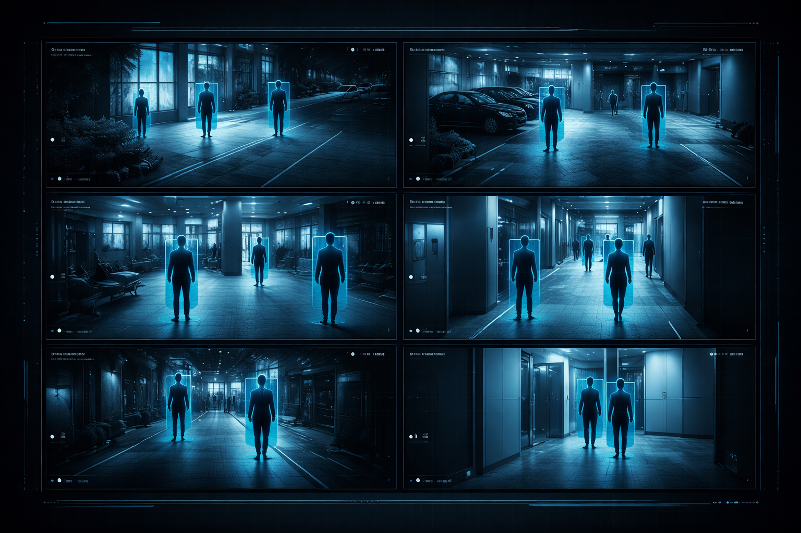

A next-generation platform combining artificial intelligence, human verification, and trusted authorities to locate missing persons with accuracy and responsibility.
AI suggests matches, people validate sightings, and only verified information reaches police and NGOs.
Get Started →
Built to prioritize accuracy, verification, and responsible action.
A clear, step-by-step pipeline designed for real-world reliability.
Uploaded images are analyzed using face recognition algorithms. The system generates a match percentage from multiple data sources.
Matches are reviewed by verified relatives and trusted users, confirming sightings via a Yes / No validation flow.
Only high-confidence, verified leads are forwarded to police stations and NGOs for timely intervention.